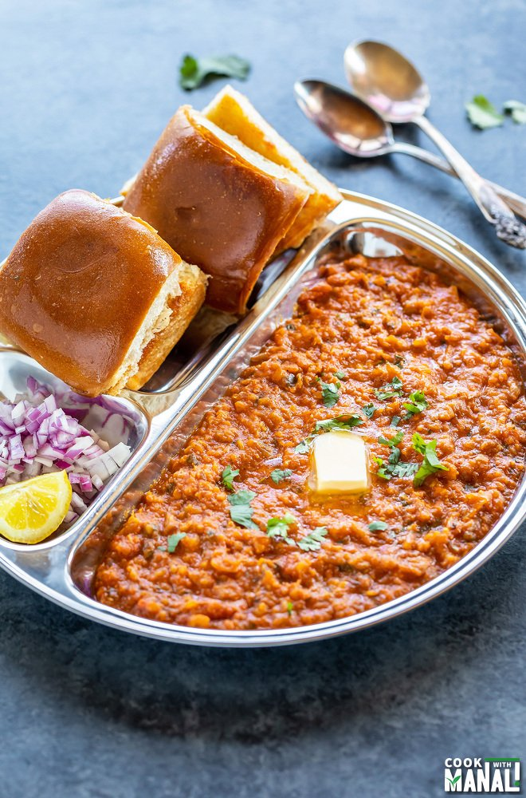

Pav Bhaji Recipe

Description
HEAVY BUTTER ALERT!
This dish is red and yellow in colour.Lots of vegetables.Looks saucy.Mumbai cuisine.But I like Vada Pav.
Ingredients
- Pav
- Tomatoes
- Potatoes
- Salt
- Butter
- Various Spices
- Water
Steps
- Start by making the bhaji by adding vegetables,spices,water and salt.
- Let it boil.
- Add butter.
- On another pan make butter pav by adding butter and heating pav.